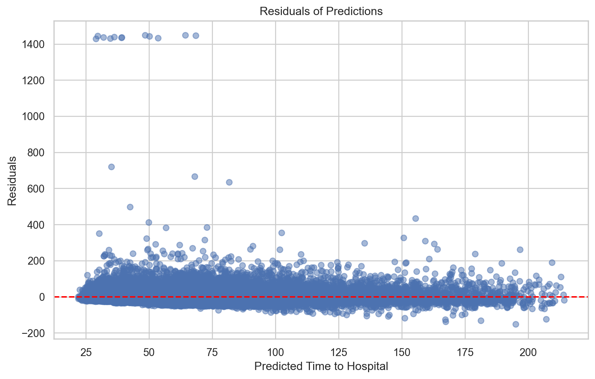
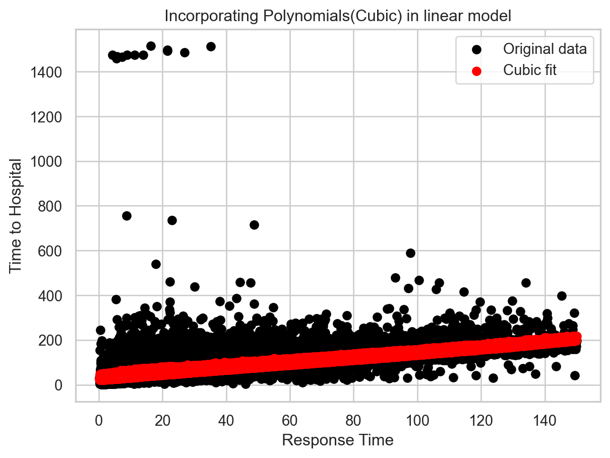
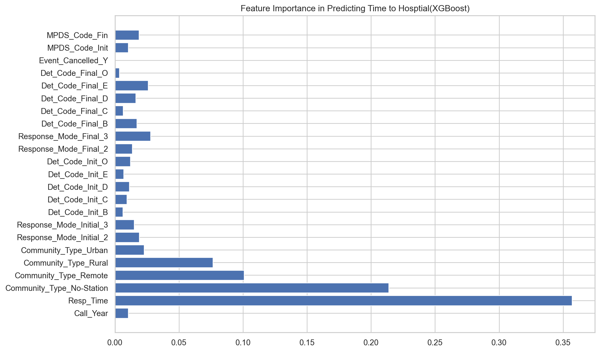

Suppose someone is enjoying their day, maybe sipping on a cup of tea, when suddenly, life throws them a curveball, and they find themselves in need of medical assistance. In those moments, the efficiency of the EMS can make all the difference between a happy ending and a not so happy one, depending on how one views it. There are some people who wonder what goes on behind the scenes and what factors influence efficiency. This article explores British Columbia’s EMS department, the largest provider of emergency healthcare in Canada and the second-busiest EMS service in North America. Using data from the Provincial Health Services Authority, I will explore the factors that contribute to the efficiency of the EMS in British Columbia.and find more information on how these various operational and logistical elements impact overall EMS efficiency and patient outcomes in British Columbia. Identifying strengths, weaknesses, and areas for improvement could help inform best practices for other major EMS providers as well.
Preprocessing:
Code
import pandas as pdimport numpy as npimport matplotlib.pyplot as pltimport seaborn as snsfrom sklearn.model_selection import train_test_splitfrom sklearn.preprocessing import StandardScalerfrom sklearn.ensemble import RandomForestRegressorfrom sklearn.metrics import mean_squared_errorfrom sklearn.metrics import r2_scorefrom sklearn.model_selection import cross_val_scorefrom sklearn.linear_model import LinearRegressionfrom sklearn.metrics import make_scorerimport mathfrom sklearn.metrics import mean_absolute_errorimport statsmodels.api as smambulance_raw = pd.read_csv("C:\\Users\\rzhon\\OneDrive\\Desktop\\Data Capstone Final\\capstone-1\\B.C. Ambulance Raw Data\\response_times_original_2009-2014.csv")ambulance_raw['MPDS_Code_Initial'] = ambulance_raw['MPDS_Code_Initial'].astype(str)
C:\Users\rzhon\AppData\Local\Temp\ipykernel_12868\1436662149.py:16: DtypeWarning:
Columns (3,6) have mixed types. Specify dtype option on import or set low_memory=False.
C:\Users\rzhon\AppData\Local\Temp\ipykernel_12868\876954086.py:1: DtypeWarning:
Columns (3,6) have mixed types. Specify dtype option on import or set low_memory=False.
Code
# Importing descriptionsmpds_codes = pd.read_excel("C:\\Users\\rzhon\\OneDrive\\Desktop\\Data Capstone Final\\capstone-1\\B.C. Ambulance Raw Data\MPDS_Codes_and_RAP_Changes.xlsx")mpds_codes.columns = [c.strip() for c in mpds_codes.columns]mpds_codes = mpds_codes.apply(lambda col: col.str.strip() if col.dtype =="object"else col)# Reorganizempds_codes = mpds_codes.iloc[2:].reset_index(drop=True)mpds_codes.columns = mpds_codes.iloc[0]mpds_codes = mpds_codes[1:].reset_index(drop=True)mpds_codes = mpds_codes.rename(columns={'MPDS Code': 'MPDS_Code', 'Description': 'Description'})mpds_codes['MPDS_Code'] = mpds_codes['MPDS_Code'].astype(str)mpds_codes['MPDS_Code'] = mpds_codes['MPDS_Code'].str.upper()# Add descriptions to ambulance_raw dataframejoined_df = ambulance_raw.merge(mpds_codes, how='inner', left_on='MPDS_Code_Final', right_on='MPDS_Code')
Temporal Patterns:
By examining response times across different years, I uncover the ebb and flow of emergency calls. Moreover, I will investigate the impact of community type on response times, shedding light on the challenges faced by different communities.
Code
commonincidents = joined_df['Description'].value_counts().head(10).index# Filtertop10 = joined_df[joined_df['Description'].isin(commonincidents)]# Get average response time for each year and descriptionavg_response_time = top10.groupby(['Call_Year', 'Description'])['Resp_Time'].mean().unstack()plt.figure(figsize=(12, 8))for description in commonincidents: plt.plot(avg_response_time.index, avg_response_time[description], marker='o', label=description)plt.xlabel('Year')plt.ylabel('Average Response Time (minutes)')plt.title('Average Response Time by Call Year for Top 10 Most Common Incidents')plt.legend(title='Most Common Initial Call Cases (Top 10)', loc='center left', bbox_to_anchor=(1, .8))plt.grid(True)plt.grid(False)plt.show()
“TRANSFER- ACUITY I (No priority symptoms)” means that the patient is being transferred between healthcare facilities, their condition is stable, and they do not have any symptoms that would require a higher priority transfer. This type of transfer is generally not considered an emergency and may be scheduled in advance.
Code
# Make sure time is poitive numberambulance_raw = ambulance_raw[ambulance_raw['Resp_Time'] >0]plt.figure(figsize=(12, 7))sns.boxplot(x='Community_Type', y='Resp_Time', data=ambulance_raw)plt.title('Response Time Across Different Types of Communities')plt.ylabel('Response Time (min)')plt.xlabel('Community Type')plt.xticks(rotation=45)#plt.savefig('FinalProjPoster2.svg', format='svg')plt.show()
From the boxplots, No-station communities usually have to wait a longer period for first responders to arrive. The population density is low and there is no dedicated police station or full-time law enforcement officers stationed within the community. Due to the distance between the community and the nearest police station, response times for emergency services may be longer. The cases that need more attention have a faster response time. Predominantly, the incidents revolve around respiratory difficulties and falls. These times have remained very consistent over the years. Some of the cases that are more severe are like automobiles where dirty oils/fluids and air filters are not given priority, then they start getting sick and problems occur. Same happens with tropical storms when they don’t have access to warm waters and moist air.
Code
plt.hist(ambulance_raw['Community_Type'], bins=5, edgecolor='black')plt.xlabel('Type of Community')plt.ylabel('Frequency(millions)')plt.title('Distribution of EMS events through different Communties')plt.show()
The amount of cases in Remote and No-Station areas is minimal. Metro areas have the most cases usually because of the population density, along with more infrastructure and pollution. Furthermore, the amounts of cases have been increasing over the years for metro and urban communities.
Code
community_types = ['Metro', 'Urban', 'Rural', 'Remote', 'No-Station']plt.figure(figsize=(10, 6))# Group by year and community typefor community_type in community_types: community_data = ambulance_raw[ambulance_raw['Community_Type'] == community_type] call_frequencies = community_data.groupby('Call_Year').size() call_frequencies.plot(kind='line', marker='o', label=community_type)plt.title('Emergency Cases Over Time (2009-2014)')plt.xlabel('Year')plt.ylabel('Number of Cases')plt.grid(True)plt.xticks(rotation=0)plt.legend()plt.tight_layout()plt.show()
Rural, Remote, and No-station areas have a fairly consistent amount of calls annually. The less people, the less things change over time. ## Decoding the Incident: The nature of the call and its assigned priority can greatly affect response times. I examine the variety of call types and their associated response times, and explore the relationship between initial and final call codes. Sometimes, the initial assessment of an emergency might differ from the final diagnosis. I also assess the impact of changes to the Resource Allocation Plan on call prioritization.
Code
top_20 = joined_df['Description'].value_counts().head(20)top_20.plot(kind='barh')plt.xlabel('Frequency')plt.ylabel('Incident')plt.title('Top 20 Most Common EMS Cases')plt.show()
This is a more in depth part of (F1?). Some of the cases are very common. In BC, injuries from falls and transport incidents have resulted in the highest number of years lived with disability, while unintentional poisoning and injuries from self-harm have resulted in the highest number of years of life lost, with the gross cost per disability-adjusted life years for these causes ranging from $547 million to $922 million. BC’s diverse landscape includes mountains, forests, and coastal regions, leading to various outdoor activities and potential risks. The residents often engage in outdoor activities such as hiking, skiing, and cycling, which come with inherent injury risks, with peak injury months being August and September. According to B.C’s provincial trauma registry, of the five popular winter sports, the greatest amount of injuries leading to hospitalization in British Columbia happen to skiers and snowboarders.Transport incidents are also prevalent partly due to the high volume of traffic on British Columbia’s roads, particularly in metro and urban areas. Due to colder climates, some diseases could spread easier which can lead to illness. Fainting could be due to illness; It can also be due to unintentional poisoning one way or another.
# Bar chart of avg resp time between changed and unchanged casesambulance_raw['code_change'] = ambulance_raw.apply(lambda x: 'No Change'if x['MPDS_Code_Initial'] == x['MPDS_Code_Final'] else'Changed', axis=1)avgresponsebychange = ambulance_raw.groupby('code_change')['To_Hosp'].mean().reset_index()avgresponsebychange.columns = ['code_change', 'avg_response_time']plt.figure(figsize=(10, 8))sns.barplot(data=avgresponsebychange, x='code_change', y='avg_response_time')plt.title('Effect of Code Change on Time to Hospital')plt.xlabel('Code Change')plt.ylabel('Average Time to Hospital (min)')#sns.despine()plt.show()
Call types can change if the corresponding call is accually different from what was initially reported. There is a small portion of changes between Initial and Final MPDS codes. MPDS Codes are a subset of Determinant codes so it makes sense there is a slight bit more change. The difference between the time it takes to get to the hospital is a bit higher with change, but its not really noticeable.
Code
# Grouped bar plot of frequenct of reponse codes over the years.frequencydata = cleaned_raw.groupby(['Call_Year', 'Response_Mode_Initial']).size().reset_index(name='Frequency')pivot_table = frequencydata.pivot(index='Call_Year', columns='Response_Mode_Initial', values='Frequency')pivot_table.plot(kind='bar', figsize=(12, 8))plt.title('Calls (2009-2014) by Response Code')plt.xlabel('Year')plt.ylabel('Number of Cases')plt.xticks(rotation=0)plt.legend(title='Response Code')plt.show()
[Code 3 = Lights and Sirens; Code 2 = Lights w/o Sirens; Code 1 = No Lights and Sirens] On October 2013, BCEHS implemented a revised EMS resource allocation plan. This plan was designed to optimize the allocation of resources by prescribing the paramedic qualification that should respond and at what speed, as well as the associated potential first responder attendance for a given 911 call. This includes 74 incident codes that were reclassified from Code 2 to Code 3 calls. These modifications to call prioritization can have a significant impact on how emergency resources are deployed. I’ll assess the effect of these changes on response times and call prioritization. In (F8?), There is a noticeable increase in Response times from 2013-2014. The revision aimed to improve the appropriateness of responses to emergency calls, ensuring that resources were matched more effectively to the needs of the call.
Code
# Bubble plotslocation_grp = cleaned_raw.groupby(['Community_Type','Response_Mode_Initial'])location_grp_ct = location_grp['MPDS_Code_Initial'].count().reset_index()fig, ax = plt.subplots(figsize=(10, 8))ax.scatter(location_grp_ct['Community_Type'], location_grp_ct['Response_Mode_Initial'], s=location_grp_ct['MPDS_Code_Initial']*.005, c=location_grp_ct['MPDS_Code_Initial'], alpha=0.5)ax.set_xlabel('Community Type')ax.set_ylabel('Response Code')ax.set_title('Event types by Community and Response Codes')plt.show()location_grp = cleaned_raw.groupby(['Community_Type','Det_Code_Init'])location_grp_ct = location_grp['MPDS_Code_Initial'].count().reset_index()fig, ax = plt.subplots(figsize=(10, 8))ax.scatter(location_grp_ct['Community_Type'], location_grp_ct['Det_Code_Init'], s=location_grp_ct['MPDS_Code_Initial']*.005, c=location_grp_ct['MPDS_Code_Initial'], alpha=0.5)ax.set_xlabel('Community Type')ax.set_ylabel('Det Code')ax.set_title('Event types by Community and Det Codes')plt.show()
(Note: Here are what each Determinant Codes represent respectively[Alpha: Typically involves non-life-threatening situations; Bravo: Conditions that require prompt, but not immediate care; Charlie: Significant injuries or symptoms; Delta: Represents a life-threatening emergency; Echo: High probability of immediate life-threat; Omega: For incidents that are non-life-threatening and may not need immediate medical intervention]) The bubble plots above are a more in depth look at (F3?). It shows the distribution of different cases across different communities, response codes, and determination codes. The bigger and lighter a bubble is, the larger number of cases there are. The smaller and darker the bubble is, the smaller number of cases there are. The plots show that the amount of cases are proportional across the x-axis(Community Type) and y-axis(response code and determination code). There is nothing out of the ordinary. Overall, Responding code 3 is the most common and the cases with Determinant Codes A,B,C, and D are the most frequent. There’s not much of Determinant code E which is the most severe.
From Call to Hospital:
Dissecting the emergency response process, the analysis focuses on the various components that contribute to the overall response time. By examining the time elapsed from ambulance dispatch to on-scene arrival, and on-scene arrival to hospital arrival.
Code
# Time distributionsns.set(style="whitegrid")plt.figure(figsize=(12, 6))sns.histplot(ambulance_raw['Resp_Time'], bins=50, kde=True)plt.title('Distribution of Response Times')plt.xlabel('Response Time (min)')plt.ylabel('Frequency')
Text(0, 0.5, 'Frequency')
What I noticed is that the response times from the call dispatch to when the emergency crew arrives on scene takes the shape of a normal distribution with a slight right skew. The vast portion is 10 minutes and less.
Code
ambulance_raw2 = ambulance_rawmbulance_raw2 = ambulance_raw.drop(ambulance_raw[(ambulance_raw['To_Hosp'].isnull()) | (ambulance_raw['Resp_Time'].isnull())].index)ambulance_raw2['TimeDifference'] = ambulance_raw2['To_Hosp'] - ambulance_raw2['Resp_Time']for col in ambulance_raw2.select_dtypes(include='number').columns:print((ambulance_raw2[col] <0).sum())if (ambulance_raw2[col] <0).sum() >0: ambulance_raw2 = ambulance_raw2[ambulance_raw2[col] >=0]plt.figure(figsize=(10, 6))sns.scatterplot(x='Resp_Time', y='TimeDifference', data=ambulance_raw2, alpha=0.2)z = np.polyfit(ambulance_raw2['Resp_Time'], ambulance_raw2['TimeDifference'], 1)p = np.poly1d(z)plt.plot(ambulance_raw2['Resp_Time'], p(ambulance_raw2['Resp_Time']), "r--")plt.title('Time on Scene vs Time on scene to Hospital')plt.xlabel('Response Time to Scene (min)')plt.ylabel('Time from scene to Hospital (min)')plt.show()
0
0
13
1045
(F11?) above shows a scatterplot between Response Time to Scene and the elapsed time from when the EMS crew arrives on scene to when the crew arrives at the hospital. The plot does good showing patterns and outliers. There are so many observations that the data points can overlap so it’s not great at identifying potential clusters. The outliers for the time from scene to hospital all have a high amount of minutes which could indicate inaccurate data entry or unusual/rare cases.
Code
ambulance_raw['Response_Time_Category'] = pd.cut(ambulance_raw['Resp_Time'], bins=[0, 10, float('inf')], labels=['<10 min', '>=10 min'])response_time_ct = ambulance_raw.groupby(['Call_Year', 'Response_Time_Category']).size().unstack(fill_value=0)response_time_ct.plot(kind='bar', stacked=True, figsize=(10, 6), color=['green', 'red'])plt.title('Distribution of Yearly Calls by Response Times(2009-2014)')plt.xlabel('Year')plt.ylabel('Amount of Calls')plt.xticks(rotation=0)plt.legend(title='Response Time')plt.tight_layout()plt.show()
Code
echo_calls = ambulance_raw[ambulance_raw['Det_Code_Init'] =='E']echo_calls['Response_Time_Category'] = pd.cut(echo_calls['Resp_Time'], bins=[0, 10, float('inf')], labels=['<10 min', '>=10 min'])response_time_ct = echo_calls.groupby(['Call_Year', 'Response_Time_Category']).size().unstack(fill_value=0)response_time_ct.plot(kind='bar', stacked=True, figsize=(10, 6), color=['green', 'red'])plt.title('Distribution Echo Calls by Response Time Category')plt.xlabel('Year')plt.ylabel('Amount of Calls')plt.xticks(rotation=45)plt.legend(title='Response Time Category', loc='upper left')plt.tight_layout()plt.show()
C:\Users\rzhon\AppData\Local\Temp\ipykernel_12868\606239621.py:2: SettingWithCopyWarning:
A value is trying to be set on a copy of a slice from a DataFrame.
Try using .loc[row_indexer,col_indexer] = value instead
See the caveats in the documentation: https://pandas.pydata.org/pandas-docs/stable/user_guide/indexing.html#returning-a-view-versus-a-copy
The bar plots indicates that amount of calls are going up over the years which aligns with (F4?). The response time for Echo calls, which are the most urgent ones, generally on average always have faster response times proportionally than the overall amount of calls combined. ## Simulation and Optimization By developing a simulation model, I tested various resource allocation and ambulance placement methods to identify the most effective approaches. This allows for exploration of different scenarios and assessments of their impact on response times. Parameters were set up for the number of simulations and ambulances, along with a maximum acceptable response time. Through an objective function, it then simulates various scenarios where the distribution of ambulances between different community settings is altered to discover the optimum allocation that minimizes average response time while penalizing instances exceeding the maximum allowed response time. This function repeatedly samples from different community segments of the data according to predefined numbers of allocated ambulances. It computes average times and penalties over multiple iterations to produce a measurable objective value. Using this function, an optimization routine seeks out the best possible division of ambulances between these community types under constraints ensuring total ambulance count remains constant. The optimized results determine how many ambulances should be designated to each area type, which theoretically leads to balanced responsiveness across geographies. For the histogram, a wider spread indicates more variability in response times, which could suggest inconsistency in service delivery. Overlapping areas in the histogram could indicate similarities between different community types.
I compared the performance of various algorithms, presenting evaluation metrics and model comparison tables to showcase their effectiveness. I focused on the time the crew gets dispatched to when the crew arrives at the hospital. I used 70% of the data for training and 30% for testing since I believe it is appropriate for the amount of data there is. All times with missing values were removed. I could have optimized these models more, but it was taking a long time to run so I did not implement it. I removed columns that lists the specific cities since there are redacted values. The Community type is good enough to explain location. All predictors were used to model the elapsed time from dispatch to hospital for the cases that are applicable. First I used a linear model to forecast the elapsed time:
C:\Users\rzhon\AppData\Local\Temp\ipykernel_12868\3833265565.py:1: DtypeWarning:
Columns (3,6) have mixed types. Specify dtype option on import or set low_memory=False.
from sklearn.model_selection import train_test_splitimport randomrandom.seed()X_train, X_test, y_train, y_test = train_test_split(X, y, test_size=0.3, random_state=random.randint(1, 100))
Code
# :inear regression modelfrom sklearn.linear_model import LinearRegressionmodel = LinearRegression()model.fit(X_train, y_train)# Evaluating the modelfrom sklearn.metrics import mean_squared_error, r2_scorey_pred = model.predict(X_test)mean_squared_error(y_test, y_pred), r2_score(y_test, y_pred)plt.figure(figsize=(10,6))plt.scatter(y_test, y_pred, alpha=0.5)plt.title('Actual vs Predicted Time to Hospital')plt.xlabel('Actual Time to Hospital (Min)')plt.ylabel('Predicted Time to Hospital (Min)')plt.plot([min(y_test), max(y_test)], [min(y_test), max(y_test)], color='red')plt.xlim(0, 200)plt.ylim(0, 200)plt.show()
Code
# Get residuals plotresiduals = y_test - y_predplt.figure(figsize=(10,6))plt.scatter(y_pred, residuals, alpha=0.5)plt.title('Residuals of Predictions')plt.xlabel('Predicted Time to Hospital')plt.ylabel('Residuals')plt.axhline(y=0, color='red', linestyle='--')plt.show()

The linear model had an R-squared score of 0.51, which is usually not great, but in this case I think it is pretty well since there are alot of other factors that influence the elapsed time from when an ambulance crew gets dispatched to when they arrive at the hospital. The residuals of predictions seem good since there are no patterns and the Residuals have a decent spread.
Code
from sklearn.preprocessing import PolynomialFeatures# Create polynomial features for Response timepoly_features_cubic = PolynomialFeatures(degree=3, include_bias=False)X_cubic = poly_features_cubic.fit_transform(X_train[['Resp_Time']])# Concatenate polynomial features to the original featuresX_train_cubic = np.hstack([X_train.drop(['Resp_Time'], axis=1), X_cubic])# Train Polynomial Regressionmodel_cubic = LinearRegression()model_cubic.fit(X_train_cubic, y_train)# EvaluateX_test_cubic = poly_features_cubic.transform(X_test[['Resp_Time']])X_test_cubic = np.hstack([X_test.drop(['Resp_Time'], axis=1), X_test_cubic])y_pred_cubic = model_cubic.predict(X_test_cubic)mse_cubic = mean_squared_error(y_test, y_pred_cubic)r2_cubic = r2_score(y_test, y_pred_cubic)print(f"Cubic Model MSE: {mse_cubic}, R2: {r2_cubic}")plt.title("Incorporating Polynomials(Cubic) in linear model")plt.scatter(X_test['Resp_Time'], y_test, color='black', label='Original data')plt.scatter(X_test['Resp_Time'], y_pred_cubic, color='red', label='Cubic fit')plt.xlabel('Response Time')plt.ylabel('Time to Hospital')plt.legend()plt.show()
Cubic Model MSE: 258.5249662135555, R2: 0.4930969541940049

Here I did a simple linear regression with only the response time as the predictor. When I implemented a cubic fit, the predictions were more consistent and linear.
I fitted a random forest model. The R-squared score was around 0.42. I used the default amount of estimators which is 100. The time it takes to respond to the scene was the most important feature, with the MPDS_Codes, following along. This makes sense since the response time is part of the total elapsed time it takes to get to the hospital
# Getting feature importancefeatures_df = pd.DataFrame({'Feature': X.columns, 'Importance': gb_model.feature_importances_})features_df = features_df.sort_values(by='Importance', ascending=False)plt.figure(figsize=(12, 8))plt.barh(features_df['Feature'], features_df['Importance'])plt.title('Feature Importances in Predicting Time to Hospital(Gradient boost)')plt.xlabel('Importance')plt.ylabel('Feature')plt.gca().invert_yaxis()plt.show()
I implemented gradient boosting with 100 estimators. I set the max depth to 3 for balance(preventing overfitting). The r-squared score is similar to the linear model at around 0.52 at random_state = 42. The most important feature was also response time, with community type following along.
Code
from xgboost import XGBRegressorxgb_regressor = XGBRegressor()xgb_regressor.fit(X_train, y_train)
C:\Users\rzhon\anaconda3\lib\site-packages\xgboost\compat.py:36: FutureWarning:
pandas.Int64Index is deprecated and will be removed from pandas in a future version. Use pandas.Index with the appropriate dtype instead.
C:\Users\rzhon\anaconda3\lib\site-packages\xgboost\data.py:250: FutureWarning:
pandas.Int64Index is deprecated and will be removed from pandas in a future version. Use pandas.Index with the appropriate dtype instead.
feature_importance = xgb_regressor.feature_importances_plt.figure(figsize=(12, 8))plt.barh(X.columns, feature_importance)plt.title('Feature Importance in Predicting Time to Hosptial(XGBoost)')plt.show()

I also implemented XGBoost which should be slightly better than the original gradient boosting model. The r-squared values is around 0.53 at random_state = 42. The result supported the original model that response time was is the most important features, with community type following along. ## Conclusion: Following the implementation of the revised resource allocation plan, BCEHS continued to transform and improve its services. This included increasing the number of paramedics and ambulances and introducing a new dispatch approach aimed at shortening response times for patients who need care most. Post-2014, there was a noted need for improved coordination of access to emergency health services with fire departments. This was identified as a key area where performance could be enhanced to ensure more effective emergency responses. BCEHS also recognized the need to evaluate its advanced care coverage across the province to determine whether it was sufficiently meeting the needs of patients, especially in rural and remote communities. This evaluation was part of an ongoing effort to ensure equitable access to emergency medical services throughout British Columbia. Recently, there was a reconstitution of the BCEHS board of directors to focus solely on ambulance services, with direct accountability to the Minister of Health. There was an appointment of a new chief ambulance officer responsible for the day-to-day management of the BC Ambulance Service. Funding for 85 new full-time paramedics, 30 full-time dispatchers, 22 new ambulances, and converting 22 rural ambulance stations to 24/7 ALPHA stations. In October 2021, 22 ambulance stations were converted from on-call paramedic staffing to 24/7 stations with 8 full-time paramedics. Also in 2021, there was expanded first responder capabilities that increased the care that first responders can provide, including additional diagnostic testing and administering epinephrine for life-threatening allergic reactions.
References
“ACCESS TO EMERGENCY HEALTH SERVICES.” 2019. Office of the Auditor General of British Columbia, 3–36.
“B.c. Acting to Improve Ambulance Response Times, Support Emergency Workers.” 2021. BC Gov News Ministry of Health.
Besserer, Floyd A, and Nadine R Caron. 2013. “Patterns of Outdoor Recreational Injury in Northern British Columbia.”Wilderness & Environmental Medicine 24 (4): 397–401.
“Changes Enhance Emergency Care for British Columbians.” 2021. BC Gov News Ministry of Health.
Dow, M. n.d. “British Columbia Ambulance Service Resource Allocation Plan: An Analysis of Recent Changes to Call Codes, 2014.”Centre for Public Safety and Criminal Justice Research, School of Criminology and Criminal Justice, University of the Fraser Valley.
“Emergency Service Response Codes.” n.d. Wikipedia.
“Injury Prevention Tips.” n.d. Provincial Health Services Authority.
“Province Making Progress Strengthening Ambulance System.” 2021. BC Gov News Ministry of Health.
Rajabali, Fahra, Alex Zheng, Kate Turcotte, Li Rita Zhang, Diana Kao, Drona Rasali, Megan Oakey, and Ian Pike. 2019. “The Association of Material Deprivation Component Measures with Injury Hospital Separations in British Columbia, Canada.”Injury Epidemiology 6: 1–9.
“THE CASE FOR INJURY PREVENTION.” n.d. BC Injury Research and Prevention Unit.
Source Code
---title: "Overview of British Colombia EMS activity (2009-2014)"subtitle: "Spring 2024"author: "Robert Zhong"bibliography: references.bibnumber-sections: falseformat: html: theme: default rendering: embed-resources code-fold: true code-tools: true toc: true pdf: defaultjupyter: python3nocite: | @*---# BCEHS activity 2009-2014Suppose someone is enjoying their day, maybe sipping on a cup of tea, when suddenly, life throws them a curveball, and they find themselves in need of medical assistance. In those moments, the efficiency of the EMS can make all the difference between a happy ending and a not so happy one, depending on how one views it. There are some people who wonder what goes on behind the scenes and what factors influence efficiency. This article explores British Columbia's EMS department, the largest provider of emergency healthcare in Canada and the second-busiest EMS service in North America. Using data from the Provincial Health Services Authority, I will explore the factors that contribute to the efficiency of the EMS in British Columbia.and find more information on how these various operational and logistical elements impact overall EMS efficiency and patient outcomes in British Columbia. Identifying strengths, weaknesses, and areas for improvement could help inform best practices for other major EMS providers as well.## Preprocessing:```{python}import pandas as pdimport numpy as npimport matplotlib.pyplot as pltimport seaborn as snsfrom sklearn.model_selection import train_test_splitfrom sklearn.preprocessing import StandardScalerfrom sklearn.ensemble import RandomForestRegressorfrom sklearn.metrics import mean_squared_errorfrom sklearn.metrics import r2_scorefrom sklearn.model_selection import cross_val_scorefrom sklearn.linear_model import LinearRegressionfrom sklearn.metrics import make_scorerimport mathfrom sklearn.metrics import mean_absolute_errorimport statsmodels.api as smambulance_raw = pd.read_csv("C:\\Users\\rzhon\\OneDrive\\Desktop\\Data Capstone Final\\capstone-1\\B.C. Ambulance Raw Data\\response_times_original_2009-2014.csv")ambulance_raw['MPDS_Code_Initial'] = ambulance_raw['MPDS_Code_Initial'].astype(str)``````{python}cleaned_raw = pd.read_csv("C:\\Users\\rzhon\\OneDrive\\Desktop\Data Capstone Final\\capstone-1\\B.C. Ambulance Raw Data\\response_times_original_2009-2014.csv")# Removing duplicate values for resposne mode intitalcleaned_raw['Response_Mode_Initial'] = cleaned_raw['Response_Mode_Initial'].astype(str)cleaned_raw = cleaned_raw[~cleaned_raw['Response_Mode_Initial'].isin(['.', '0'])]# Removing duplicate values for resposne mode finalcleaned_raw['Response_Mode_Final'] = cleaned_raw['Response_Mode_Final'].astype(str)cleaned_raw = cleaned_raw[~cleaned_raw['Response_Mode_Final'].isin(['.', '0'])]cleaned_raw['Det_Code_Init'] = cleaned_raw['Det_Code_Init'].astype(str)cleaned_raw = cleaned_raw[~cleaned_raw['Det_Code_Init'].isin(['.'])]cleaned_raw['MPDS_Code_Initial'] = cleaned_raw['MPDS_Code_Initial'].astype(str)``````{python}# Importing descriptionsmpds_codes = pd.read_excel("C:\\Users\\rzhon\\OneDrive\\Desktop\\Data Capstone Final\\capstone-1\\B.C. Ambulance Raw Data\MPDS_Codes_and_RAP_Changes.xlsx")mpds_codes.columns = [c.strip() for c in mpds_codes.columns]mpds_codes = mpds_codes.apply(lambda col: col.str.strip() if col.dtype =="object"else col)# Reorganizempds_codes = mpds_codes.iloc[2:].reset_index(drop=True)mpds_codes.columns = mpds_codes.iloc[0]mpds_codes = mpds_codes[1:].reset_index(drop=True)mpds_codes = mpds_codes.rename(columns={'MPDS Code': 'MPDS_Code', 'Description': 'Description'})mpds_codes['MPDS_Code'] = mpds_codes['MPDS_Code'].astype(str)mpds_codes['MPDS_Code'] = mpds_codes['MPDS_Code'].str.upper()# Add descriptions to ambulance_raw dataframejoined_df = ambulance_raw.merge(mpds_codes, how='inner', left_on='MPDS_Code_Final', right_on='MPDS_Code')```## Temporal Patterns:By examining response times across different years, I uncover the ebb and flow of emergency calls. Moreover, I will investigate the impact of community type on response times, shedding light on the challenges faced by different communities. ```{python}#| label: F1commonincidents = joined_df['Description'].value_counts().head(10).index# Filtertop10 = joined_df[joined_df['Description'].isin(commonincidents)]# Get average response time for each year and descriptionavg_response_time = top10.groupby(['Call_Year', 'Description'])['Resp_Time'].mean().unstack()plt.figure(figsize=(12, 8))for description in commonincidents: plt.plot(avg_response_time.index, avg_response_time[description], marker='o', label=description)plt.xlabel('Year')plt.ylabel('Average Response Time (minutes)')plt.title('Average Response Time by Call Year for Top 10 Most Common Incidents')plt.legend(title='Most Common Initial Call Cases (Top 10)', loc='center left', bbox_to_anchor=(1, .8))plt.grid(True)plt.grid(False)plt.show()```"TRANSFER- ACUITY I (No priority symptoms)" means that the patient is being transferred between healthcare facilities, their condition is stable, and they do not have any symptoms that would require a higher priority transfer. This type of transfer is generally not considered an emergency and may be scheduled in advance.```{python}#| label: F2# Make sure time is poitive numberambulance_raw = ambulance_raw[ambulance_raw['Resp_Time'] >0]plt.figure(figsize=(12, 7))sns.boxplot(x='Community_Type', y='Resp_Time', data=ambulance_raw)plt.title('Response Time Across Different Types of Communities')plt.ylabel('Response Time (min)')plt.xlabel('Community Type')plt.xticks(rotation=45)#plt.savefig('FinalProjPoster2.svg', format='svg')plt.show()```From the boxplots, No-station communities usually have to wait a longer period for first responders to arrive. The population density is low and there is no dedicated police station or full-time law enforcement officers stationed within the community. Due to the distance between the community and the nearest police station, response times for emergency services may be longer. The cases that need more attention have a faster response time. Predominantly, the incidents revolve around respiratory difficulties and falls. These times have remained very consistent over the years. Some of the cases that are more severe are like automobiles where dirty oils/fluids and air filters are not given priority, then they start getting sick and problems occur. Same happens with tropical storms when they don't have access to warm waters and moist air.```{python}#| label: F3plt.hist(ambulance_raw['Community_Type'], bins=5, edgecolor='black')plt.xlabel('Type of Community')plt.ylabel('Frequency(millions)')plt.title('Distribution of EMS events through different Communties')plt.show()```The amount of cases in Remote and No-Station areas is minimal. Metro areas have the most cases usually because of the population density, along with more infrastructure and pollution. Furthermore, the amounts of cases have been increasing over the years for metro and urban communities.```{python}#| label: F4community_types = ['Metro', 'Urban', 'Rural', 'Remote', 'No-Station']plt.figure(figsize=(10, 6))# Group by year and community typefor community_type in community_types: community_data = ambulance_raw[ambulance_raw['Community_Type'] == community_type] call_frequencies = community_data.groupby('Call_Year').size() call_frequencies.plot(kind='line', marker='o', label=community_type)plt.title('Emergency Cases Over Time (2009-2014)')plt.xlabel('Year')plt.ylabel('Number of Cases')plt.grid(True)plt.xticks(rotation=0)plt.legend()plt.tight_layout()plt.show()```Rural, Remote, and No-station areas have a fairly consistent amount of calls annually. The less people, the less things change over time. ## Decoding the Incident: The nature of the call and its assigned priority can greatly affect response times. I examine the variety of call types and their associated response times, and explore the relationship between initial and final call codes. Sometimes, the initial assessment of an emergency might differ from the final diagnosis. I also assess the impact of changes to the Resource Allocation Plan on call prioritization.```{python}#| label: F5#| # Distribution of differnetn casestop_20 = joined_df['Description'].value_counts().head(20)top_20.plot(kind='barh')plt.xlabel('Frequency')plt.ylabel('Incident')plt.title('Top 20 Most Common EMS Cases')plt.show()```This is a more in depth part of @F1. Some of the cases are very common. In BC, injuries from falls and transport incidents have resulted in the highest number of years lived with disability, while unintentional poisoning and injuries from self-harm have resulted in the highest number of years of life lost, with the gross cost per disability-adjusted life years for these causes ranging from $547 million to $922 million. BC’s diverse landscape includes mountains, forests, and coastal regions, leading to various outdoor activities and potential risks. The residents often engage in outdoor activities such as hiking, skiing, and cycling, which come with inherent injury risks, with peak injury months being August and September. According to B.C’s provincial trauma registry, of the five popular winter sports, the greatest amount of injuries leading to hospitalization in British Columbia happen to skiers and snowboarders.Transport incidents are also prevalent partly due to the high volume of traffic on British Columbia's roads, particularly in metro and urban areas. Due to colder climates, some diseases could spread easier which can lead to illness. Fainting could be due to illness; It can also be due to unintentional poisoning one way or another.```{python}#| label: F6#Getting percent change between inital and final, then making pie chartsresponsechangepercentage = (cleaned_raw['Response_Mode_Initial'] != cleaned_raw['Response_Mode_Final']).mean() *100mpdschangepercentage = (cleaned_raw['MPDS_Code_Initial'] != cleaned_raw['MPDS_Code_Final']).mean() *100determinantchangepercentage = (cleaned_raw['Det_Code_Init'] != cleaned_raw['Det_Code_Final']).mean() *100labels = ['No Change', 'Change']colors = ['lightcoral', 'lightskyblue']explode = (0, 0.1)plt.figure(figsize=(4, 4))plt.pie([100- responsechangepercentage, responsechangepercentage], labels=labels, colors=colors, explode=explode, autopct='%1.1f%%', startangle=140)plt.axis('equal')plt.title('Response Change Percentage')plt.show()plt.figure(figsize=(4, 4))plt.pie([100- mpdschangepercentage, mpdschangepercentage], labels=labels, colors=colors, explode=explode, autopct='%1.1f%%', startangle=140)plt.axis('equal')plt.title('MPDS Change Percentage')plt.show()plt.figure(figsize=(4, 4))plt.pie([100- determinantchangepercentage, determinantchangepercentage], labels=labels, colors=colors, explode=explode, autopct='%1.1f%%', startangle=140)plt.axis('equal')plt.title('Determinant Change Percentage')plt.show()``````{python}#| label: F7# Bar chart of avg resp time between changed and unchanged casesambulance_raw['code_change'] = ambulance_raw.apply(lambda x: 'No Change'if x['MPDS_Code_Initial'] == x['MPDS_Code_Final'] else'Changed', axis=1)avgresponsebychange = ambulance_raw.groupby('code_change')['To_Hosp'].mean().reset_index()avgresponsebychange.columns = ['code_change', 'avg_response_time']plt.figure(figsize=(10, 8))sns.barplot(data=avgresponsebychange, x='code_change', y='avg_response_time')plt.title('Effect of Code Change on Time to Hospital')plt.xlabel('Code Change')plt.ylabel('Average Time to Hospital (min)')#sns.despine()plt.show()```Call types can change if the corresponding call is accually different from what was initially reported. There is a small portion of changes between Initial and Final MPDS codes. MPDS Codes are a subset of Determinant codes so it makes sense there is a slight bit more change. The difference between the time it takes to get to the hospital is a bit higher with change, but its not really noticeable.```{python}#| label: F8# Grouped bar plot of frequenct of reponse codes over the years.frequencydata = cleaned_raw.groupby(['Call_Year', 'Response_Mode_Initial']).size().reset_index(name='Frequency')pivot_table = frequencydata.pivot(index='Call_Year', columns='Response_Mode_Initial', values='Frequency')pivot_table.plot(kind='bar', figsize=(12, 8))plt.title('Calls (2009-2014) by Response Code')plt.xlabel('Year')plt.ylabel('Number of Cases')plt.xticks(rotation=0)plt.legend(title='Response Code')plt.show()```[Code 3 = Lights and Sirens; Code 2 = Lights w/o Sirens; Code 1 = No Lights and Sirens]On October 2013, BCEHS implemented a revised EMS resource allocation plan. This plan was designed to optimize the allocation of resources by prescribing the paramedic qualification that should respond and at what speed, as well as the associated potential first responder attendance for a given 911 call. This includes 74 incident codes that were reclassified from Code 2 to Code 3 calls. These modifications to call prioritization can have a significant impact on how emergency resources are deployed. I'll assess the effect of these changes on response times and call prioritization. In @F8, There is a noticeable increase in Response times from 2013-2014. The revision aimed to improve the appropriateness of responses to emergency calls, ensuring that resources were matched more effectively to the needs of the call.```{python}#| label: F9# Bubble plotslocation_grp = cleaned_raw.groupby(['Community_Type','Response_Mode_Initial'])location_grp_ct = location_grp['MPDS_Code_Initial'].count().reset_index()fig, ax = plt.subplots(figsize=(10, 8))ax.scatter(location_grp_ct['Community_Type'], location_grp_ct['Response_Mode_Initial'], s=location_grp_ct['MPDS_Code_Initial']*.005, c=location_grp_ct['MPDS_Code_Initial'], alpha=0.5)ax.set_xlabel('Community Type')ax.set_ylabel('Response Code')ax.set_title('Event types by Community and Response Codes')plt.show()location_grp = cleaned_raw.groupby(['Community_Type','Det_Code_Init'])location_grp_ct = location_grp['MPDS_Code_Initial'].count().reset_index()fig, ax = plt.subplots(figsize=(10, 8))ax.scatter(location_grp_ct['Community_Type'], location_grp_ct['Det_Code_Init'], s=location_grp_ct['MPDS_Code_Initial']*.005, c=location_grp_ct['MPDS_Code_Initial'], alpha=0.5)ax.set_xlabel('Community Type')ax.set_ylabel('Det Code')ax.set_title('Event types by Community and Det Codes')plt.show()```(Note: Here are what each Determinant Codes represent respectively[Alpha: Typically involves non-life-threatening situations; Bravo: Conditions that require prompt, but not immediate care; Charlie: Significant injuries or symptoms; Delta: Represents a life-threatening emergency; Echo: High probability of immediate life-threat; Omega: For incidents that are non-life-threatening and may not need immediate medical intervention])The bubble plots above are a more in depth look at @F3. It shows the distribution of different cases across different communities, response codes, and determination codes. The bigger and lighter a bubble is, the larger number of cases there are. The smaller and darker the bubble is, the smaller number of cases there are. The plots show that the amount of cases are proportional across the x-axis(Community Type) and y-axis(response code and determination code). There is nothing out of the ordinary. Overall, Responding code 3 is the most common and the cases with Determinant Codes A,B,C, and D are the most frequent. There's not much of Determinant code E which is the most severe.## From Call to Hospital:Dissecting the emergency response process, the analysis focuses on the various components that contribute to the overall response time. By examining the time elapsed from ambulance dispatch to on-scene arrival, and on-scene arrival to hospital arrival. ```{python}#| label: F10# Time distributionsns.set(style="whitegrid")plt.figure(figsize=(12, 6))sns.histplot(ambulance_raw['Resp_Time'], bins=50, kde=True)plt.title('Distribution of Response Times')plt.xlabel('Response Time (min)')plt.ylabel('Frequency')```What I noticed is that the response times from the call dispatch to when the emergency crew arrives on scene takes the shape of a normal distribution with a slight right skew. The vast portion is 10 minutes and less.```{python}#| label: F11ambulance_raw2 = ambulance_rawmbulance_raw2 = ambulance_raw.drop(ambulance_raw[(ambulance_raw['To_Hosp'].isnull()) | (ambulance_raw['Resp_Time'].isnull())].index)ambulance_raw2['TimeDifference'] = ambulance_raw2['To_Hosp'] - ambulance_raw2['Resp_Time']for col in ambulance_raw2.select_dtypes(include='number').columns:print((ambulance_raw2[col] <0).sum())if (ambulance_raw2[col] <0).sum() >0: ambulance_raw2 = ambulance_raw2[ambulance_raw2[col] >=0]plt.figure(figsize=(10, 6))sns.scatterplot(x='Resp_Time', y='TimeDifference', data=ambulance_raw2, alpha=0.2)z = np.polyfit(ambulance_raw2['Resp_Time'], ambulance_raw2['TimeDifference'], 1)p = np.poly1d(z)plt.plot(ambulance_raw2['Resp_Time'], p(ambulance_raw2['Resp_Time']), "r--")plt.title('Time on Scene vs Time on scene to Hospital')plt.xlabel('Response Time to Scene (min)')plt.ylabel('Time from scene to Hospital (min)')plt.show()```@F11 above shows a scatterplot between Response Time to Scene and the elapsed time from when the EMS crew arrives on scene to when the crew arrives at the hospital. The plot does good showing patterns and outliers. There are so many observations that the data points can overlap so it's not great at identifying potential clusters. The outliers for the time from scene to hospital all have a high amount of minutes which could indicate inaccurate data entry or unusual/rare cases.```{python}#| label: F12ambulance_raw['Response_Time_Category'] = pd.cut(ambulance_raw['Resp_Time'], bins=[0, 10, float('inf')], labels=['<10 min', '>=10 min'])response_time_ct = ambulance_raw.groupby(['Call_Year', 'Response_Time_Category']).size().unstack(fill_value=0)response_time_ct.plot(kind='bar', stacked=True, figsize=(10, 6), color=['green', 'red'])plt.title('Distribution of Yearly Calls by Response Times(2009-2014)')plt.xlabel('Year')plt.ylabel('Amount of Calls')plt.xticks(rotation=0)plt.legend(title='Response Time')plt.tight_layout()plt.show()``````{python}#| label: F13echo_calls = ambulance_raw[ambulance_raw['Det_Code_Init'] =='E']echo_calls['Response_Time_Category'] = pd.cut(echo_calls['Resp_Time'], bins=[0, 10, float('inf')], labels=['<10 min', '>=10 min'])response_time_ct = echo_calls.groupby(['Call_Year', 'Response_Time_Category']).size().unstack(fill_value=0)response_time_ct.plot(kind='bar', stacked=True, figsize=(10, 6), color=['green', 'red'])plt.title('Distribution Echo Calls by Response Time Category')plt.xlabel('Year')plt.ylabel('Amount of Calls')plt.xticks(rotation=45)plt.legend(title='Response Time Category', loc='upper left')plt.tight_layout()plt.show()```The bar plots indicates that amount of calls are going up over the years which aligns with @F4. The response time for Echo calls, which are the most urgent ones, generally on average always have faster response times proportionally than the overall amount of calls combined.## Simulation and OptimizationBy developing a simulation model, I tested various resource allocation and ambulance placement methods to identify the most effective approaches. This allows for exploration of different scenarios and assessments of their impact on response times. Parameters were set up for the number of simulations and ambulances, along with a maximum acceptable response time. Through an objective function, it then simulates various scenarios where the distribution of ambulances between different community settings is altered to discover the optimum allocation that minimizes average response time while penalizing instances exceeding the maximum allowed response time. This function repeatedly samples from different community segments of the data according to predefined numbers of allocated ambulances. It computes average times and penalties over multiple iterations to produce a measurable objective value. Using this function, an optimization routine seeks out the best possible division of ambulances between these community types under constraints ensuring total ambulance count remains constant. The optimized results determine how many ambulances should be designated to each area type, which theoretically leads to balanced responsiveness across geographies. For the histogram, a wider spread indicates more variability in response times, which could suggest inconsistency in service delivery. Overlapping areas in the histogram could indicate similarities between different community types.```{python}#| label: F14from scipy.optimize import minimizeimport randomrandom.seed()data = ambulance_raw# simulation parametersnum_simulations = random.randint(2, 5)num_ambulances = random.randint(20, 50)max_response_time = random.randint(8, 20) # minutesprint(num_simulations, num_ambulances, max_response_time)# objective function for optimizationdef objective_function(params): num_urban_ambulances, num_rural_ambulances, num_metro_ambulances, num_remote_ambulances, num_nostation_ambulances = params total_response_times = [] total_hospital_times = []for _ inrange(num_simulations): urban_data = data[(data['Community_Type'] =='Urban') & (data['Resp_Time'].notnull())] rural_data = data[(data['Community_Type'] =='Rural') & (data['Resp_Time'].notnull())] metro_data = data[(data['Community_Type'] =='Metro') & (data['Resp_Time'].notnull())] remote_data = data[(data['Community_Type'] =='Remote') & (data['Resp_Time'].notnull())] nostation_data = data[(data['Community_Type'] =='No-Station') & (data['Resp_Time'].notnull())]# Randomly select calls based on the number of available ambulances urban_calls = urban_data.sample(n=int(num_urban_ambulances), replace=True) rural_calls = rural_data.sample(n=int(num_rural_ambulances), replace=True) metro_calls = metro_data.sample(n=int(num_metro_ambulances), replace=True) remote_calls = remote_data.sample(n=int(num_remote_ambulances), replace=True) nostation_calls = nostation_data.sample(n=int(num_nostation_ambulances), replace=True)# Calculate the response times and hospital times for the selected calls response_times = (urban_calls['Resp_Time'].tolist() + rural_calls['Resp_Time'].tolist() + metro_calls['Resp_Time'].tolist() + remote_calls['Resp_Time'].tolist() + nostation_calls['Resp_Time'].tolist()) hospital_times = (urban_calls['To_Hosp'].tolist() + rural_calls['To_Hosp'].tolist() + metro_calls['To_Hosp'].tolist() + remote_calls['To_Hosp'].tolist() + nostation_calls['To_Hosp'].tolist()) total_response_times.extend(response_times) total_hospital_times.extend(hospital_times) avg_response_time = np.mean(total_response_times) penalty = np.sum(np.array(total_response_times) > max_response_time)return avg_response_time + penaltybounds = [(0, num_ambulances) for _ inrange(5)]constraints = ({'type': 'eq', 'fun': lambda x: np.sum(x) - num_ambulances})result = minimize(objective_function, x0=[num_ambulances//5]*5, bounds=bounds, constraints=constraints)optimized_urban_ambulances, optimized_rural_ambulances, optimized_metro_ambulances, optimized_remote_ambulances, optimized_nostation_ambulances = result.xprint("Optimized Allocation:")print(f"Urban Ambulances: {int(optimized_urban_ambulances)}")print(f"Rural Ambulances: {int(optimized_rural_ambulances)}")print(f"Metro Ambulances: {int(optimized_metro_ambulances)}")print(f"Remote Ambulances: {int(optimized_remote_ambulances)}")print(f"No-Station Ambulances: {int(optimized_nostation_ambulances)}")# Run the simulation with the optimized allocationurban_data = data[(data['Community_Type'] =='Urban') & (data['Resp_Time'].notnull())]rural_data = data[(data['Community_Type'] =='Rural') & (data['Resp_Time'].notnull())]metro_data = data[(data['Community_Type'] =='Metro') & (data['Resp_Time'].notnull())]remote_data = data[(data['Community_Type'] =='Remote') & (data['Resp_Time'].notnull())]nostation_data = data[(data['Community_Type'] =='No-Station') & (data['Resp_Time'].notnull())]urban_calls = urban_data.sample(n=int(optimized_urban_ambulances), replace=True)rural_calls = rural_data.sample(n=int(optimized_rural_ambulances), replace=True)metro_calls = metro_data.sample(n=int(optimized_metro_ambulances), replace=True)remote_calls = metro_data.sample(n=int(optimized_remote_ambulances), replace=True)nostation_calls = metro_data.sample(n=int(optimized_nostation_ambulances), replace=True)urban_response_times = urban_calls['Resp_Time']rural_response_times = rural_calls['Resp_Time']metro_response_times = metro_calls['Resp_Time']remote_response_times = remote_calls['Resp_Time']nostation_response_times = nostation_calls['Resp_Time']plt.figure(figsize=(10, 6))plt.hist(urban_response_times, bins=20, alpha=0.5, label='Urban')plt.hist(rural_response_times, bins=20, alpha=0.5, label='Rural')plt.hist(metro_response_times, bins=20, alpha=0.5, label='Metro')plt.hist(remote_response_times, bins=20, alpha=0.5, label='Remote')plt.hist(nostation_response_times, bins=20, alpha=0.5, label='No-Station')plt.xlabel('Response Time (minutes)')plt.ylabel('Frequency')plt.title('Response Time Distribution')plt.legend()plt.show()```## Forecasting Elapsed Times:I compared the performance of various algorithms, presenting evaluation metrics and model comparison tables to showcase their effectiveness. I focused on the time the crew gets dispatched to when the crew arrives at the hospital. I used 70% of the data for training and 30% for testing since I believe it is appropriate for the amount of data there is. All times with missing values were removed. I could have optimized these models more, but it was taking a long time to run so I did not implement it. I removed columns that lists the specific cities since there are redacted values. The Community type is good enough to explain location. All predictors were used to model the elapsed time from dispatch to hospital for the cases that are applicable. First I used a linear model to forecast the elapsed time:```{python}ambulance_raw = pd.read_csv("C:\\Users\\rzhon\\OneDrive\\Desktop\\Data Capstone Final\\capstone-1\\B.C. Ambulance Raw Data\\response_times_original_2009-2014.csv")ambulance_raw['MPDS_Code_Initial'] = ambulance_raw['MPDS_Code_Initial'].astype(str)ambulance_raw = ambulance_raw.sample(frac=1).reset_index(drop=True)ambulance_raw['Response_Mode_Initial'] = ambulance_raw['Response_Mode_Initial'].astype(str)ambulance_raw = ambulance_raw[~ambulance_raw['Response_Mode_Initial'].isin(['.', '0'])]ambulance_raw['Response_Mode_Final'] = ambulance_raw['Response_Mode_Final'].astype(str)ambulance_raw = ambulance_raw[~ambulance_raw['Response_Mode_Final'].isin(['.', '0'])]ambulance_raw['Det_Code_Init'] = ambulance_raw['Det_Code_Init'].astype(str)ambulance_raw = ambulance_raw[~ambulance_raw['Det_Code_Init'].isin(['.'])]ambulance_raw = ambulance_raw.drop(['Call_Loc_Community'],axis=1)ambulance_raw.drop(ambulance_raw[(ambulance_raw['To_Hosp'].isnull()) | (ambulance_raw['Resp_Time'].isnull())].index)categorical_columns = ambulance_raw.select_dtypes(include=['object']).columnscatagorical_uniques = ambulance_raw[categorical_columns].nunique()low_cardinality_columns = catagorical_uniques[catagorical_uniques <=14].indexambulance_raw1 = pd.get_dummies(ambulance_raw, columns=low_cardinality_columns, drop_first=True)``````{python}from sklearn.preprocessing import LabelEncoderlabel_encoder = LabelEncoder()ambulance_raw1['MPDS_Code_Init'] = label_encoder.fit_transform(ambulance_raw1['MPDS_Code_Initial'])ambulance_raw1['MPDS_Code_Fin'] = label_encoder.fit_transform(ambulance_raw1['MPDS_Code_Final'])ambulance_raw1 = ambulance_raw1.dropna()``````{python}droppedfeatures = ['To_Hosp', 'MPDS_Code_Initial', 'MPDS_Code_Final']X = ambulance_raw1.drop(droppedfeatures, axis=1)y = ambulance_raw1['To_Hosp']``````{python}from sklearn.model_selection import train_test_splitimport randomrandom.seed()X_train, X_test, y_train, y_test = train_test_split(X, y, test_size=0.3, random_state=random.randint(1, 100))``````{python}# :inear regression modelfrom sklearn.linear_model import LinearRegressionmodel = LinearRegression()model.fit(X_train, y_train)# Evaluating the modelfrom sklearn.metrics import mean_squared_error, r2_scorey_pred = model.predict(X_test)mean_squared_error(y_test, y_pred), r2_score(y_test, y_pred)plt.figure(figsize=(10,6))plt.scatter(y_test, y_pred, alpha=0.5)plt.title('Actual vs Predicted Time to Hospital')plt.xlabel('Actual Time to Hospital (Min)')plt.ylabel('Predicted Time to Hospital (Min)')plt.plot([min(y_test), max(y_test)], [min(y_test), max(y_test)], color='red')plt.xlim(0, 200)plt.ylim(0, 200)plt.show()``````{python}# Get residuals plotresiduals = y_test - y_predplt.figure(figsize=(10,6))plt.scatter(y_pred, residuals, alpha=0.5)plt.title('Residuals of Predictions')plt.xlabel('Predicted Time to Hospital')plt.ylabel('Residuals')plt.axhline(y=0, color='red', linestyle='--')plt.show()```The linear model had an R-squared score of 0.51, which is usually not great, but in this case I think it is pretty well since there are alot of other factors that influence the elapsed time from when an ambulance crew gets dispatched to when they arrive at the hospital. The residuals of predictions seem good since there are no patterns and the Residuals have a decent spread.```{python}from sklearn.preprocessing import PolynomialFeatures# Create polynomial features for Response timepoly_features_cubic = PolynomialFeatures(degree=3, include_bias=False)X_cubic = poly_features_cubic.fit_transform(X_train[['Resp_Time']])# Concatenate polynomial features to the original featuresX_train_cubic = np.hstack([X_train.drop(['Resp_Time'], axis=1), X_cubic])# Train Polynomial Regressionmodel_cubic = LinearRegression()model_cubic.fit(X_train_cubic, y_train)# EvaluateX_test_cubic = poly_features_cubic.transform(X_test[['Resp_Time']])X_test_cubic = np.hstack([X_test.drop(['Resp_Time'], axis=1), X_test_cubic])y_pred_cubic = model_cubic.predict(X_test_cubic)mse_cubic = mean_squared_error(y_test, y_pred_cubic)r2_cubic = r2_score(y_test, y_pred_cubic)print(f"Cubic Model MSE: {mse_cubic}, R2: {r2_cubic}")plt.title("Incorporating Polynomials(Cubic) in linear model")plt.scatter(X_test['Resp_Time'], y_test, color='black', label='Original data')plt.scatter(X_test['Resp_Time'], y_pred_cubic, color='red', label='Cubic fit')plt.xlabel('Response Time')plt.ylabel('Time to Hospital')plt.legend()plt.show()```Here I did a simple linear regression with only the response time as the predictor. When I implemented a cubic fit, the predictions were more consistent and linear.```{python}from sklearn.ensemble import RandomForestRegressorrf_model = RandomForestRegressor(n_estimators=100, random_state=random.randint(1, 100), n_jobs =1)rf_model.fit(X_train, y_train)``````{python}predictions_rf = rf_model.predict(X_test)``````{python}print("RF MSE:", mean_squared_error(y_test, predictions_rf))print("Rf R2 Score:", r2_score(y_test, predictions_rf))features_df = pd.DataFrame({'Feature': X.columns, 'Importance': rf_model.feature_importances_})features_df = features_df.sort_values(by='Importance', ascending=False)plt.figure(figsize=(12, 8))plt.barh(features_df['Feature'], features_df['Importance'])plt.title('Feature Importances in Predicting Time to Hospital(Random Forest)')plt.xlabel('Importance')plt.ylabel('Feature')plt.gca().invert_yaxis()plt.show()```I fitted a random forest model. The R-squared score was around 0.42. I used the default amount of estimators which is 100. The time it takes to respond to the scene was the most important feature, with the MPDS_Codes, following along. This makes sense since the response time is part of the total elapsed time it takes to get to the hospital```{python}from sklearn.ensemble import GradientBoostingRegressor# Gradient Boosting Regressorgb_model = GradientBoostingRegressor( n_estimators=100, learning_rate=0.1, max_depth=3, random_state=random.randint(1, 100))gb_model.fit(X_train, y_train)``````{python}gb_y_pred = gb_model.predict(X_test)``````{python}print('Gradient Boosting MSE:', mean_squared_error(y_test, gb_y_pred))print('Gradient Boosting R2:', r2_score(y_test, gb_y_pred))``````{python}# Getting feature importancefeatures_df = pd.DataFrame({'Feature': X.columns, 'Importance': gb_model.feature_importances_})features_df = features_df.sort_values(by='Importance', ascending=False)plt.figure(figsize=(12, 8))plt.barh(features_df['Feature'], features_df['Importance'])plt.title('Feature Importances in Predicting Time to Hospital(Gradient boost)')plt.xlabel('Importance')plt.ylabel('Feature')plt.gca().invert_yaxis()plt.show()```I implemented gradient boosting with 100 estimators. I set the max depth to 3 for balance(preventing overfitting). The r-squared score is similar to the linear model at around 0.52 at random_state = 42. The most important feature was also response time, with community type following along.```{python}from xgboost import XGBRegressorxgb_regressor = XGBRegressor()xgb_regressor.fit(X_train, y_train)``````{python}gb1_y_pred = xgb_regressor.predict(X_test)``````{python}print('XGBoost MSE:', mean_squared_error(y_test, gb1_y_pred))print('XGBoost R2:', mean_squared_error(y_test, gb1_y_pred))``````{python}feature_importance = xgb_regressor.feature_importances_plt.figure(figsize=(12, 8))plt.barh(X.columns, feature_importance)plt.title('Feature Importance in Predicting Time to Hosptial(XGBoost)')plt.show()```I also implemented XGBoost which should be slightly better than the original gradient boosting model. The r-squared values is around 0.53 at random_state = 42. The result supported the original model that response time was is the most important features, with community type following along.## Conclusion:Following the implementation of the revised resource allocation plan, BCEHS continued to transform and improve its services. This included increasing the number of paramedics and ambulances and introducing a new dispatch approach aimed at shortening response times for patients who need care most. Post-2014, there was a noted need for improved coordination of access to emergency health services with fire departments. This was identified as a key area where performance could be enhanced to ensure more effective emergency responses. BCEHS also recognized the need to evaluate its advanced care coverage across the province to determine whether it was sufficiently meeting the needs of patients, especially in rural and remote communities. This evaluation was part of an ongoing effort to ensure equitable access to emergency medical services throughout British Columbia. Recently, there was a reconstitution of the BCEHS board of directors to focus solely on ambulance services, with direct accountability to the Minister of Health. There was an appointment of a new chief ambulance officer responsible for the day-to-day management of the BC Ambulance Service. Funding for 85 new full-time paramedics, 30 full-time dispatchers, 22 new ambulances, and converting 22 rural ambulance stations to 24/7 ALPHA stations. In October 2021, 22 ambulance stations were converted from on-call paramedic staffing to 24/7 stations with 8 full-time paramedics. Also in 2021, there was expanded first responder capabilities that increased the care that first responders can provide, including additional diagnostic testing and administering epinephrine for life-threatening allergic reactions.